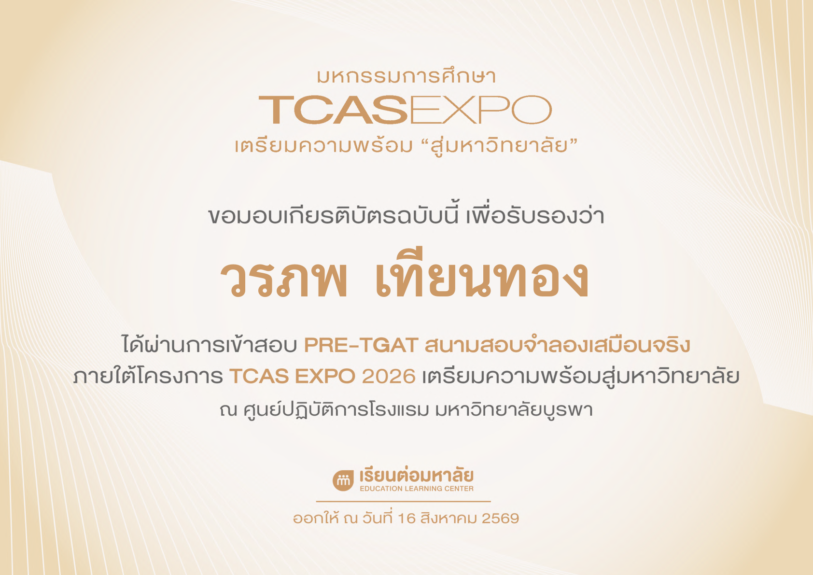

การแข่งขันทักษะภาษาอังกฤษ
ผลงานการแข่งขันที่ช่วยพัฒนาทักษะการสื่อสารและการใช้ภาษาอังกฤษ

การฝึกการสอน
ประสบการณ์การถ่ายทอดความรู้และการเรียนรู้บทบาทของครู

คณะกรรมการสภานักเรียน
ประสบการณ์การทำงานเป็นทีม มีความรับผิดชอบ และมีส่วนร่วมกับโรงเรียน

จำลองสอบภาษาไทย
ใบนี้เป็นข้อพิสูจน์ความสามารถด้านภาษาไทย

จำลองสอบวิชาคณิต
ใบนี้เป็นข้อพิสูจน์ความกล้าที่จะไปลองสอบในสิ่งที่ตัวเองไม่ถนัด

จำลองสอบ T-GAT
ประสบการณ์การลองสอบ T-GAT เตรียมตัวก่อนลงสนามจริง